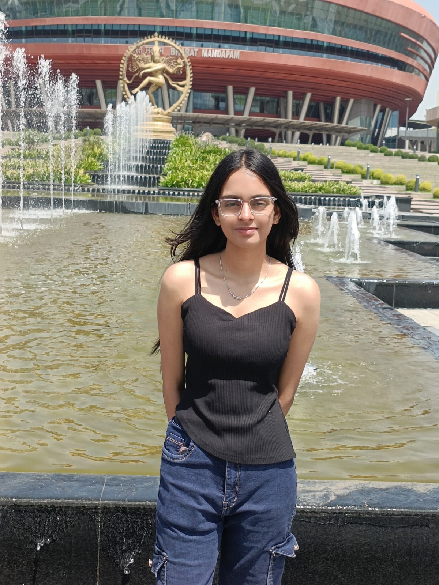
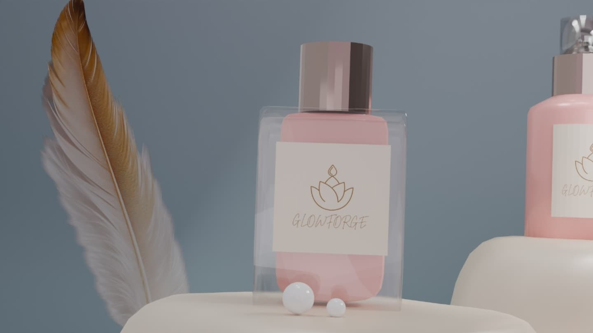
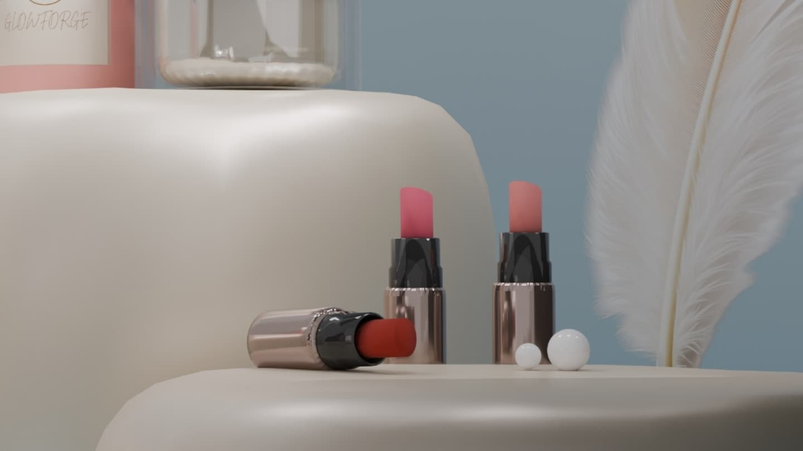
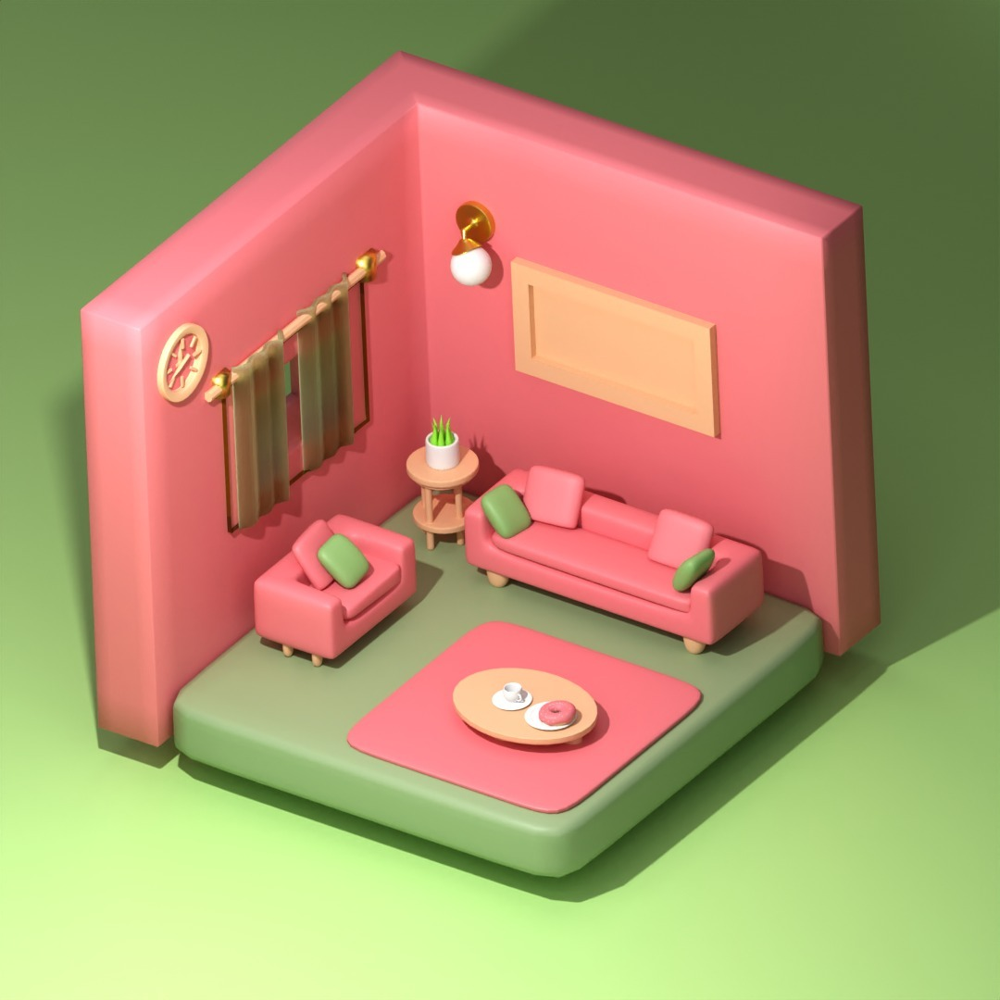
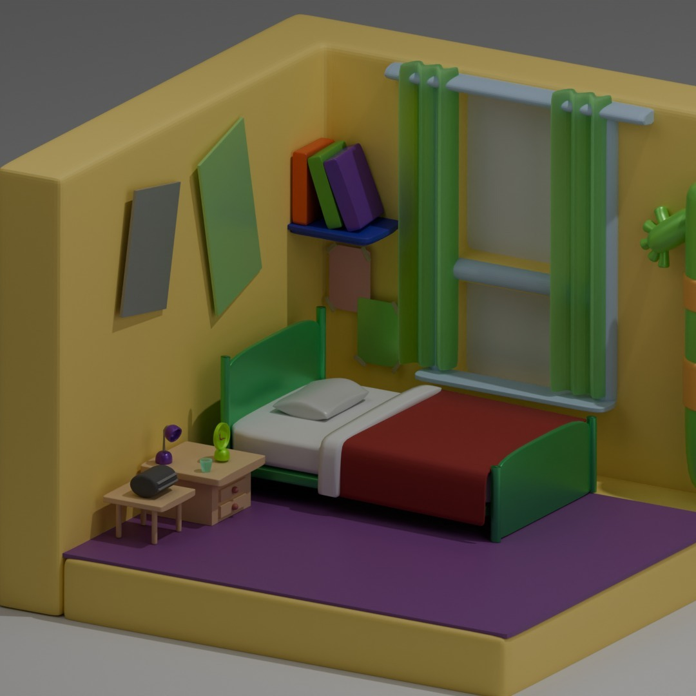
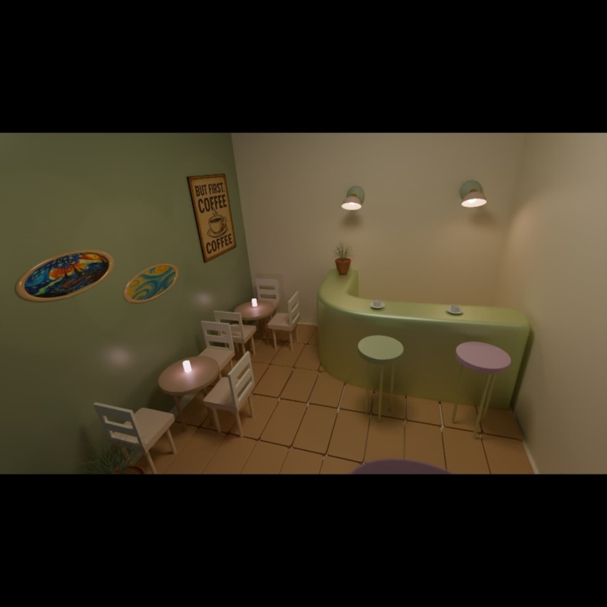
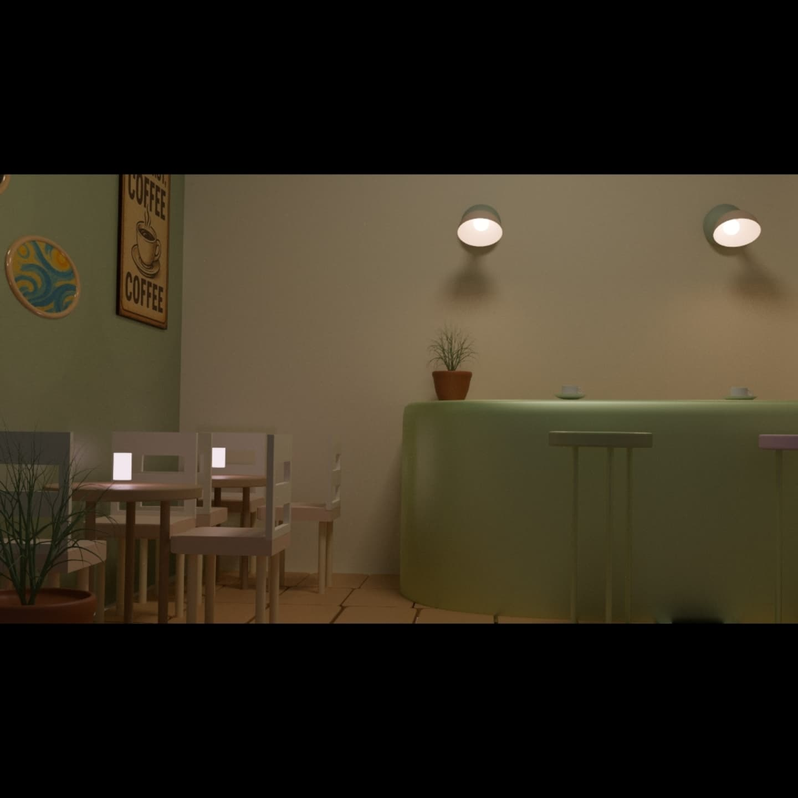
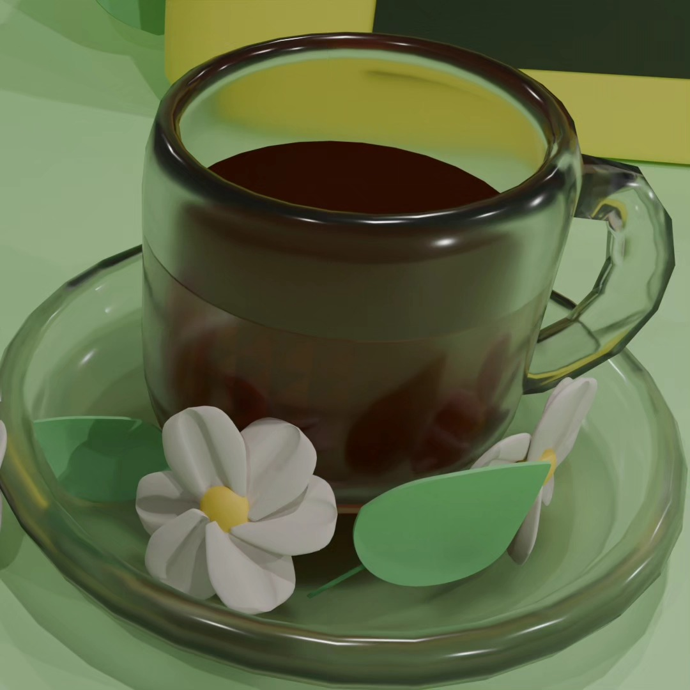

PG — 001NOW EXPLORING
GRAPH MACHINE LEARNING
Follow the money.
Mule Account Detection
Finding suspicious accounts in transaction networks with GraphSAGE, behavioral signals, and LightGBM.
AI RESEARCHER IN THE MAKING · INDIA
a little curiosity goes a long way.
I turn “what if?” into
models, experiments,
and things that work.
01 / SELECTED WORK
three stops. lots of learning.
GRAPH MACHINE LEARNING
Mule Account Detection
Finding suspicious accounts in transaction networks with GraphSAGE, behavioral signals, and LightGBM.
GENERATIVE AI · TEAM PROJECT
LLM From Scratch
Building a 163M-parameter GPT-style model from the inside out: embeddings, causal attention, and next-token training.
GENERATIVE VISION · TEAM PROJECT
Diffusion Models
Turning Gaussian noise into handwritten digits. Exploring U-Nets, DDPM, DDIM, and classifier-free guidance.

02 / THE PERSON BEHIND THE PROJECTS
I'm pursuing a B.Tech in Artificial Intelligence at Bennett University. My favourite part of AI is getting past the black box: understanding the math, building the pieces, and checking whether they actually work.
My research has taken me from image restoration and thermal super-resolution to identifying individual snakes from iris imagery. I also build full-stack AI tools and help bring robotics projects to life.
03 / STOPS ALONG THE WAY
Research internships, real questions,
and plenty of experiments.
JUL — SEP 2026 HARYANA
Research Intern · Computer Vision & Edge Computing
Developed an iris-based snake identification pipeline, from preprocessing and segmentation to recognition and 3D eye modeling. Worked with Raspberry Pi and Arducam for image acquisition.
JUN — JUL 2026 NOIDA
Computer Vision / AI Research Intern
Explored reference-free checkpoint selection for Deep Image Prior denoising, alongside experimental 8× thermal restoration. Evaluated 144 frozen denoising trajectories with ablations and bootstrap confidence intervals.
Research remains unpublished; journal submission planned.
JAN — MAY 2026 BENNETT UNIVERSITY
AI/ML Research Intern
Built an educational retrieval-augmented assistant for course support and past exam questions. Developed research and coding agents with tool calls, task decomposition, and LangGraph orchestration.
04 / MY WORKBENCH
some well-used. some still being explored.
Python · C++ · C · Java
JavaScript · TypeScript · SQL
Data structures & algorithms
PyTorch · TensorFlow · scikit-learn
Transformers · Diffusers · LightGBM
PyTorch Geometric · LangGraph
OpenCV · Restoration · Segmentation
PSNR · SSIM · LPIPS · ROC-AUC
Ablations · Bootstrap confidence intervals
React · Next.js · FastAPI
PostgreSQL · pytest · Playwright
Git · Linux · CUDA · Raspberry Pi
05 / TECHNICAL BLOGS
Thoughts on systems and problem solving, newest first.
TECHNICAL BLOG
What is an API gateway?
A single entry point for a client and multiple backend services, handling validation, access, routing, and faults.
Read the full blogLEETCODE SOLUTION
Two methods in C++
Two ways to check for repeated values in an array.
Read the full blogLEETCODE SOLUTION
The median approach
Using the median to reason about equalizing a grid.
Read the full blogLEETCODE SOLUTION
A two-pointer approach
Finding distant houses with different colors using two pointers.
Read the full blogLEETCODE SOLUTION
An easy C++ approach
A direct way to find the closest target element.
Read the full blogLEETCODE SOLUTION
A simulation approach
Following the robot step by step through commands and obstacles.
Read the full blog06 / 3D MODELLING
Rooms, objects and short animations. Flip through each image set in its own window, or press play to watch with sound.
A dark, story-led animation inspired by Stranger Things.


Cosmetic packaging, small details and soft studio lighting.


Two small rooms, each with its own palette and details.
A headphones model, from the Blender workspace to the final product view.
A short, playful iced-coffee product animation.



A cozy café interior and a close look at the coffee.
A FEW SIDE TRACKS
Beyond the notebook. As lead of Bennett University's Robogenesis Robotics Club, I've organized hands-on workshops and helped run a hackathon with 150+ teams from 14 colleges. My maze-solving robot also made Round 2 at Technex 2026, IIT (BHU).
07 / THE NEXT STOP?
For research, collaborations, or a good “what if?” — my inbox is open.
priyanshigoyal824@gmail.com